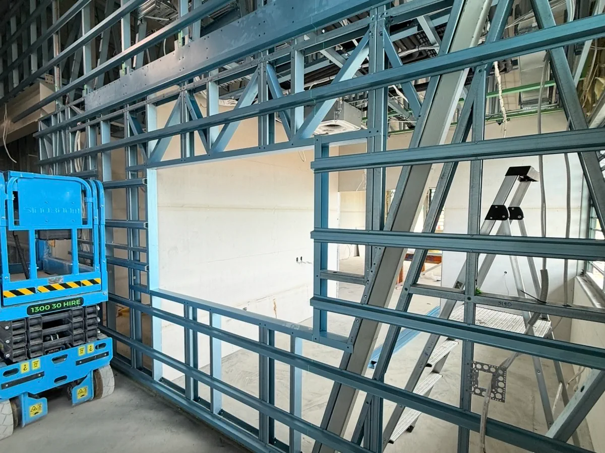

Framing
Commercial framing for larger projects, refurbishments and fit-outs across Bundaberg and surrounding areas.
Practical framing and associated carpentry for commercial projects, including wall framing, partitions and ceiling battens.

Wall framing
Wall partitions
Ceiling battens
Associated carpentry